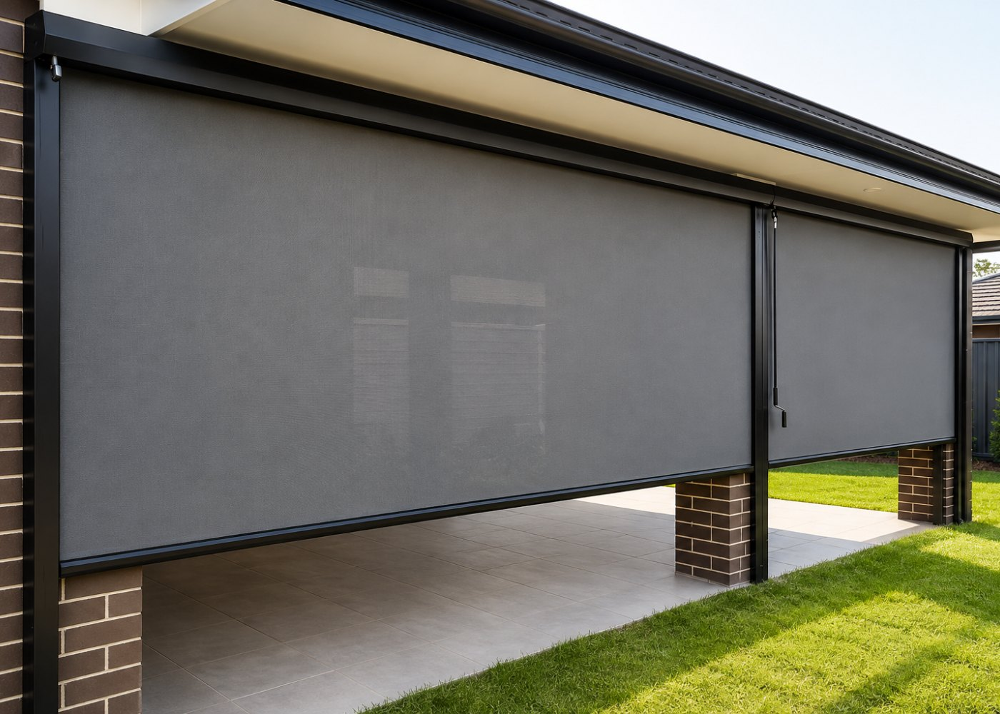
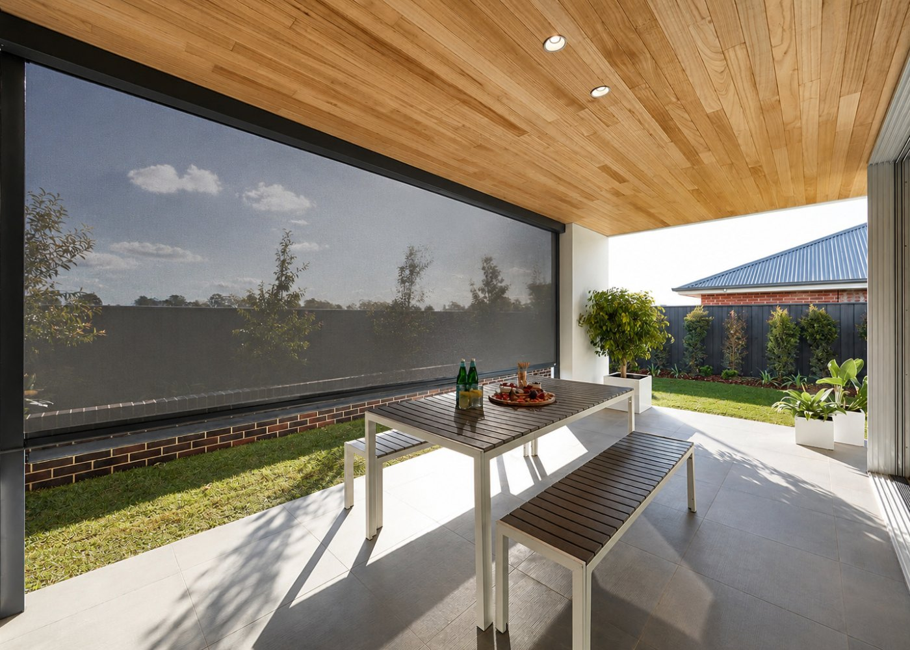

What are heavy-duty outdoor blinds?
Exterior roller screens made from weatherproof mesh or PVC fabrics, fitted to a pergola, balcony opening, patio cover or the outside of a window. Lower them to cut sun and glare, block wind and add privacy; raise them to open the space right up. “Heavy-duty” is the point: aluminium hardware, side channels and fabrics rated for outdoor life.

How they work
The systems
- Zip-track (channel) blinds — the fabric edges run in side channels, so the shade sits taut, sealed and stable even in wind. The premium, most weatherproof option and the one we recommend for open balconies and pergolas.
- Cable / wire-guided — the shade runs on tensioned cables; lighter and more economical, best for sheltered spots.
- Exterior window shades — an outdoor roller fitted over the outside of a window to stop heat before it reaches the glass — the most effective way to keep a sun-facing room cool.

The fabrics
- Sunscreen mesh — blocks most UV and glare while keeping the view and airflow. The everyday choice.
- Clear / tinted PVC — a wind and rain barrier that keeps the view; the “glass wall” look.
- Blockout — full privacy and shade.
Operate by crank, spring, or — very popular outdoors — motor with a wind sensor that raises the shade automatically in a gale.
Honest pros and cons
Pros
- Makes outdoor space usable in far more weather.
- Cuts heat and glare before it reaches your windows and furniture.
- Privacy from neighbours and the street.
- Wind and light-rain shelter with zip-track and PVC.
- Motorized with wind sensors for hands-off protection.
- Protects outdoor furniture from UV.
Cons
- Montreal winters — most exterior fabrics should be raised in heavy snow and ice; we advise on seasonal use.
- Needs solid fixing points — a pergola, posts or a beam; not every balcony has them.
- Condo / strata rules may restrict exterior fittings — check first (we can help).
- Costs more than an interior blind — outdoor hardware is heavier-duty.
- Cleaning — hose down periodically.
At a glance
| Sun & glare | Excellent |
|---|---|
| Wind shelter | Zip-track / PVC |
| Privacy | Mesh to blockout |
| Winter use | Raise in snow / ice |
| Maintenance | Hose down |
| Best for | Patios, pergolas, balconies, terraces, sun-facing windows |
| Options | Zip-track · cable-guided · exterior window shade · mesh / PVC / blockout · crank / motor / wind sensor |
Who they’re perfect for
If you have a patio, terrace or balcony you don’t use as much as you’d like because of sun, wind or the neighbours — this fixes it. Outdoor blinds are also the smartest answer for a room that overheats in summer: shading the glass from outside is far more effective than any interior blind.
Outdoor blinds are a three-season upgrade here. We spec fabrics and mounts for our freeze-thaw and advise on when to raise them for winter — most clients get May to October of extra living space, which is exactly when you want it.
Frequently asked questions
Do outdoor blinds survive Montreal winters?
The hardware does; the fabric should generally be raised during heavy snow and ice. We spec systems for our climate and advise on seasonal use — think of them as a three-season upgrade.
Can I have outdoor blinds on a condo balcony?
Often yes, but many buildings restrict exterior fittings. Check your bylaws first — we’re happy to help you present the request.
Which is better, zip-track or cable-guided?
Zip-track for open, windy or exposed spaces — it seals the edges and stays taut. Cable-guided for sheltered spots and tighter budgets.
Can outdoor blinds be motorized?
Yes, and it’s our usual recommendation outdoors — pair with a wind sensor so they retract automatically in strong gusts.
Do you install them?
Yes — we survey your fixing points, spec the right system and install free across Montreal.